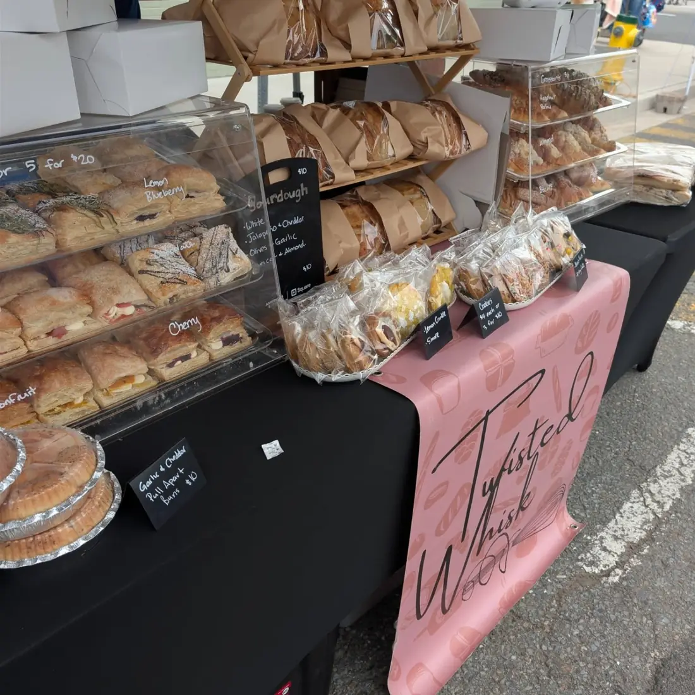
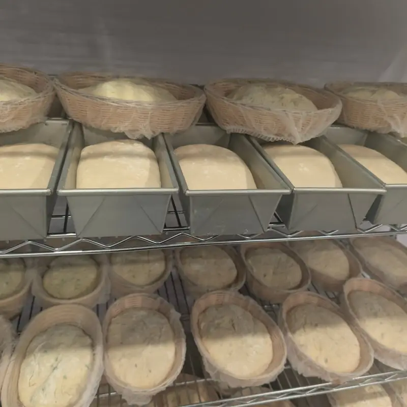
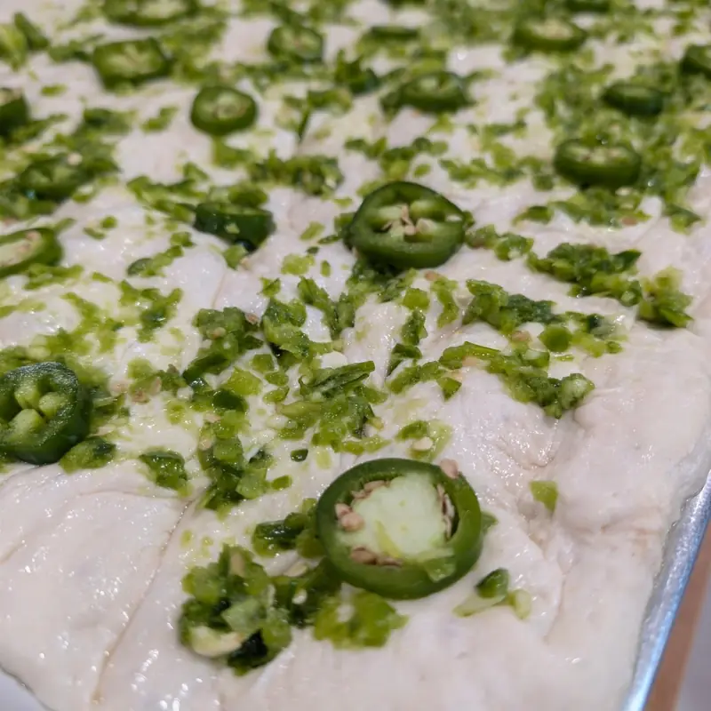
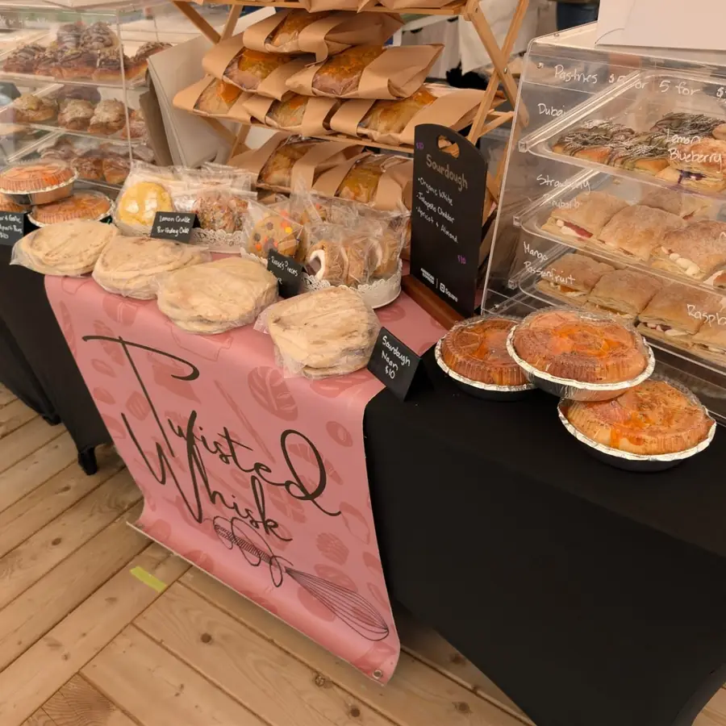
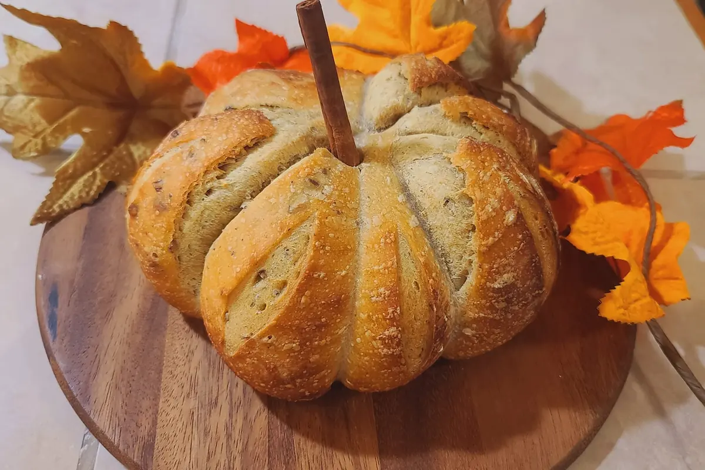

Focaccia and buns
- Jalapeño, green onion and garlic focaccia
- Olives and garlic focaccia
- Garlic and cheddar pull apart buns
- New: Butter Naancaccia
- Organic sourdough naan
I make all my fillings and preserves from scratch, using real ingredients sourced locally whenever possible.

The features change from week to week. These are the ones people ask for.
Every loaf goes into a 24 hour cold ferment before it is baked.


Markets, wineries, breweries and craft fairs around the Valley. The stops change every week, so check before you head out.


I'm Danielle Lehn, the baker and owner. I have a passion for crafting sourdough bread and sweet treats.
One of my favourite things about cooking and baking is the science behind it. Quality is key in everything I make.
"Hubby tried the Key Lime cookie. He said it's the best cookie he has ever tasted lol."
Andrea, Facebook review, May 2025